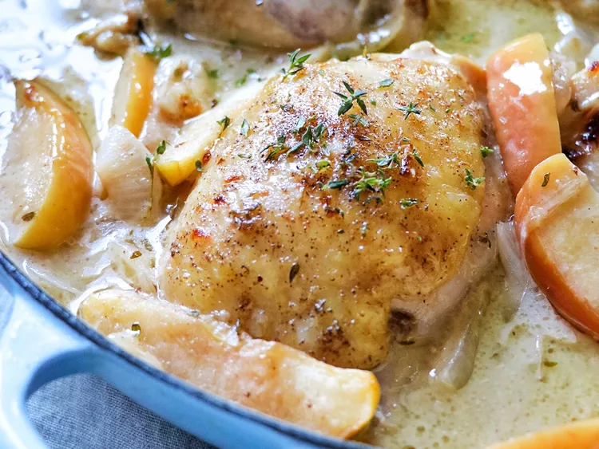

Baked Chicken Thighs with Apples and Onions

Description
Voilà une recette de poulet aux pommes et aux ognons que je n'ai encore jamais essayé, mais qui me paraît fort goûtue
Si elle me plaît, il faudra que je la conserve
Ingrédients
- 1 poulet
- Des oignons
- Des pommes
- Du cidre
Etapes
- Cuire le poulet dans le cidre
- Couper les pommes et les oignons en petits cubes
- Ajouter les pommes et les oignons au poulet
- Déguster !